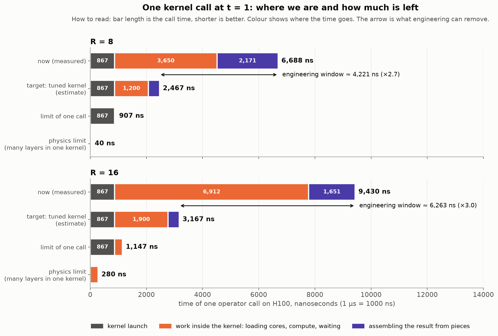
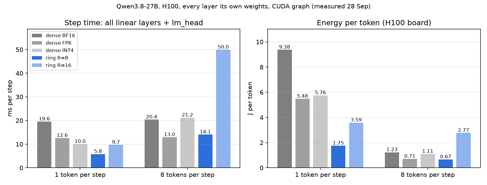
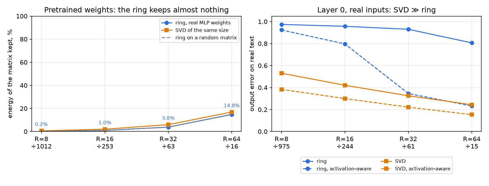
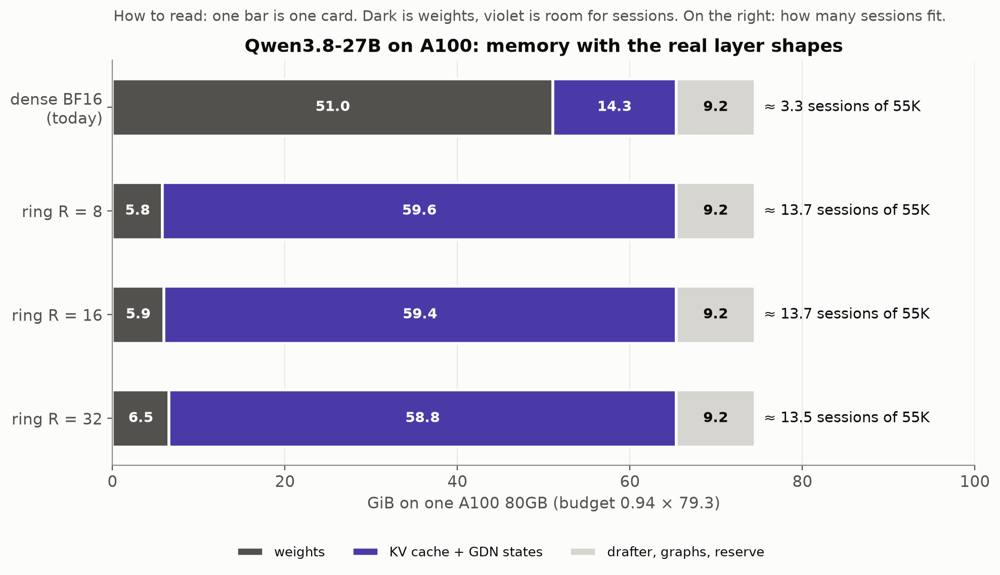
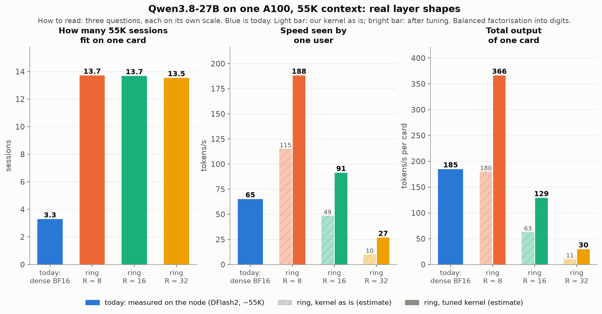

Draft for the discussion on 29 September 2026 · Danila Permogorsky · updated on the evening of 28 September: measurements on the real layer shapes and the real weights of Qwen3.8-27B (slides 7a–7d)
Store three small cores instead of the weight matrix. Compute the layer directly from them and never rebuild the matrix.
When a model generates one token at a time (decode), the GPU barely computes: it waits for the weights to arrive from memory. So extra arithmetic is almost free, and the memory the weights used to occupy is freed for the KV cache, that is, for users.
A kernel for the whole tensor-ring operator from the assignment (input 1920, output 2880), H100 SXM5, FP16.
| 1 token | our kernel | dense (cuBLAS) | reference (PyTorch) |
|---|---|---|---|
| R = 8 | 8.2 µs | 9.8 µs | 155 µs |
| R = 16 | 10.7 µs | 9.9 µs | 160 µs |
t* = kernel efficiency × GPU balance point ÷ FLOP overhead
For H100 and an ideal kernel, t* ≈ 82 tokens at R = 8 and ≈ 12 at R = 16.
Julia lab Julia + CUDA.jl PyTorch + CUDA C++ H100 (rented)
laptop, CPU → laptop, RTX 3050 Ti → laptop, RTX 3050 Ti → measurements only
the method on measure the machine, the kernel and all prepared
small problems test the model correctness checks scripts
155 µs reference: 3 einsum + 8 GPU operations, bound by the CPU
↓ turn 1: the ring is cut into independent pieces,
↓ each fits on the chip entirely
~14 µs one kernel
↓ turn 2: the result of step 2 goes straight into step 3 in registers
↓ (the FlashAttention-2 trick): kernel 8.4 → 4.5 µs
10.1 µs first win over dense
↓ turn 3: assembling the result read 12 values one after another —
↓ now it reads them all at once
8.2 µs
All three turns removed waiting, not arithmetic.
Tried and did not help: all layers in one kernel, dependency counters instead of a barrier, several multiply chains per warp, split-K.

| R = 8 | R = 16 | |
|---|---|---|
| now (measured) | 6,688 ns | 9,430 ns |
| target: tuned kernel (estimate) | ~2,470 ns | ~3,170 ns |
| window | ~4,200 ns (2.7×) | ~6,300 ns (3.0×) |
| limit of one call | 907 ns | 1,147 ns |
| physics limit | 40 ns | 280 ns |
One call cannot go below ~0.9 µs: that is the price of launching a kernel. Beyond that, the only way is to merge many layers into one kernel.
One call has three parts, and each is limited by something different.
| part of the call | R = 8 now → target | what happens | what limits it | how to remove it |
|---|---|---|---|---|
| kernel launch | 867 → 867 ns | the GPU takes the command and hands blocks to the SMs | the price of any launch: an empty kernel on H100 also takes 0.87 µs | not within one call. Only by merging calls: CUDA graphs, many layers in one kernel |
| work inside the kernel | 3,650 → ~1,200 ns | load the cores from L2, step 1, a block barrier, the multiply chain of steps 2–3 | waiting, not computing: arithmetic here is 40 ns. Loading 16–24 KB from L2 takes ~0.5 µs; each dependent mma waits ~24 cycles | load the cores while computing; keep several independent multiply chains; fewer barriers |
| assembling the result | 2,171 → ~400 ns | each output is a sum of 160 pieces from different blocks: atomics into a shared buffer, a counter, the last block converts FP32 → FP16 | several back-to-back trips to L2, ~0.5 µs each | sum the pieces inside a thread-block cluster through its distributed shared memory (Hopper), not through global memory |
For R = 16 the picture is the same: 867 + 6,912 + 1,651 ns now against 867 + ~1,900 + ~400 ns in the target. The work inside the kernel is larger because the multiply chains are longer.
How this is confirmed:
The window in short:
Conclusion: on the 1920 × 2880 test layer we are on par with dense in speed, and the main gain is memory. Real layers are tens of times larger, and the picture changes (slide 7a).
The V3T kernel now handles any shape: the mode sizes became template parameters, and BF16 was added (V3G). 107 variants were built for the model's 6 layer shapes, all checked against an FP64 oracle. The tiling for each shape comes from a measured table.
One MLP layer 5120 → 17408, µs per call:
| tokens per call | dense BF16 | dense FP8 | dense INT4 | ring R = 8 | ring R = 16 |
|---|---|---|---|---|---|
| 1 | 62 | 37 | 27 | 11.9 | 22.1 |
| 8 | 64 | 38 | 62 | 36.2 | 136 |
| 32 | 64 | 39 | 201 | 112 | 502 |

All linear layers of the model plus lm_head, each of the ~400 layers with its own weights (the L2 cache does not help), CUDA graph, H100:
| dense BF16 | FP8 | INT4 | ring R = 8 | ring R = 16 | |
|---|---|---|---|---|---|
| weights, GB | 47.7 | 25.1 | 14.5 | 2.6 | 2.8 |
| 1 token: ms per step | 19.6 | 12.6 | 10.0 | 5.8 | 9.7 |
| 1 token: J per token | 9.4 | 5.5 | 5.8 | 1.75 | 3.6 |
| 8 tokens: ms per step | 20.4 | 13.0 | 21.2 | 14.1 | 50.0 |
| 8 tokens: J per token | 1.23 | 0.71 | 1.11 | 0.67 | 2.77 |

The linear layers of 12 blocks of Qwen3.8-27B (8.4 GB) were downloaded. Each matrix was fitted with a ring using TR-SVD and TR-ALS (Zhao et al., 2016) — 368 fits in total. Self-checks of the method:
Question 1 — does R = 8 / 16 keep a full-size matrix? No.
Question 2 — does the tensorization matter? For pretrained weights, hardly.
On real inputs (layer 0, real text) the picture is sharper.
Conclusion: compressing pretrained weights into a ring after training does not work. A ring model has to be trained — directly in this format, or by activation-aware distillation. The question for the researchers is which tensorization (and possibly which change of basis) gives the ring a structure that matches the data.
Nsight Compute on the V3G kernel (layer 5120 → 17408):
The kernel still waits rather than computes. Two hypotheses were tested on the evening of 28 September:
| layer 5120 → 17408 | full call | without atomics | compute only |
|---|---|---|---|
| R = 8, 1 token | 11.8 | 10.1 | 7.7 |
| R = 8, 8 tokens | 34.9 | 27.7 | 20.9 |
| R = 16, 8 tokens | 139.5 | 130.2 | 123.3 |
To estimate the effect on a real service rather than one operator, we take as a reference the inference we already run and have measurements for. This is an example, not the target: the roadmap below is not tied to a specific model.
Everything below about the ring is analysis done together with Claude, that is, an estimate. The cost model is calibrated on these measurements and matches them within 5–7%. Direct H100 measurements are on slides 7a–7c. The estimates below are for A100 and assume that quality holds at the given rank; slide 7c shows that this requires training a ring model.
The test matrix in the assignment is small (1920 × 2880). Real models have matrices tens of times larger. These are all the linear layers of the example model:
| layers | shape | count | share of weights |
|---|---|---|---|
| MLP gate / up / down | 5120 ↔ 17408 | 64 × 3 | ~70% |
GDN in_proj_qkvz |
5120 → 16384 | 48 | ~17% |
GDN out_proj |
6144 → 5120 | 48 | ~6% |
| attention q+gate, k, v, o | 5120 → 12288 / 1024 / 1024, 6144 → 5120 | 16 | ~7% |
The FLOP overhead depends on how the matrix sides are tensorized into mode sizes. The main term is R³ ÷ (first input mode × last output mode). Large matrices give large modes, and so less extra arithmetic.
| R | FLOP overhead (balanced tensorization) | same, "FLOP-optimal" tensorization | memory compression |
|---|---|---|---|
| 8 | 1.1× | 0.1× | 895× |
| 16 | 7.7× | 0.5× | 224× |
| 32 | 57× | 3.1× | 56× |
The "FLOP-optimal" tensorization is skewed (for example, 5120 = 128 × 10 × 4). What it does to quality is unknown — a question for the researchers.

In the example, for any rank up to 32 the weights shrink to ~6 GiB and almost the whole card goes to sessions: ~13–14 sessions of 55K instead of 3–4. This conclusion does not depend on the rank.

| sessions | one user, tok/s | total per card, tok/s | |
|---|---|---|---|
| today (measured) | 3–4 | 65 | 185 |
| R = 8 (kernel as is → tuned) | 13.7 | 115 → 188 | 180 → 366 |
| R = 16 | 13.7 | 49 → 91 | 63 → 129 |
| R = 32 | 13.5 | 10 → 27 | 11 → 30 |
| R = 32, "FLOP-optimal" tensorization | 13.5 | 71 → 122 | 114 → 186 |
Prefill is thousands of tokens at once. Here the GPU computes at full speed, and the ring's extra arithmetic is paid in full. So prefill needs a different kernel: rebuild the layer's weights from the cores once, then compute with an ordinary GEMM — the same way INT4 models unpack weights on the fly.
| example: prefill 45K (today 14.3 s) | with our kernel | via weight reconstruction |
|---|---|---|
| R = 8 | ~15.4 s | ~14.5 s |
| R = 16 | ~91 s | ~15.0 s |
| R = 32 | ~660 s | ~17.2 s |
the layer's cores A, B, C (the same for both)
│
how many tokens per call?
┌──────────┴──────────┐
few (decode) many (prefill)
│ │
our kernel: contraction rebuild W → ordinary GEMM
W is never built (+2–25% to prefill)
└──────────┬──────────┘
layer output
The code already has a switch by token count: today it picks between the kernels for one token and for several. Reconstruction becomes the third branch.
| stage | what we do | gate | if not | time |
|---|---|---|---|---|
| 0 ✓ | the operator kernel | — | — | done |
| 1 | pick the target model and train its layers in ring format: distillation or activation-aware fine-tuning, then check quality on the target tasks. Pretrained weights cannot be compressed without training (slide 7c) | quality within tolerance | a higher rank; compress only part of the layers (e.g. MLP); FP8 / INT4 as the baseline | 1–3 months, researchers |
| 2 (partly ✓ 28 Sep) | decode kernel for the target model's layer shapes, auto-tuned tiling. Done: V3G for every Qwen3.8-27B shape, a tiling table for H100 | decode no slower than FP8 inference of the same model | keep part of the weights dense together with speculative decoding; TT instead of the ring | 4–8 weeks |
| 3 | prefill via weight reconstruction | time to first token ≤ +10% vs dense | prefill on a separate dense card; the KV cache moves to the ring card in a fraction of a second | 1–2 weeks (buffer + cuBLAS), 4–8 weeks (Marlin-style) |
| 4 | integration into the inference engine (e.g. SGLang): a custom op, CUDA graphs, more sessions per card | A/B against dense: cost per 1M tokens, time to first token, tok/s | raise the session count step by step | 2–4 weeks |
| 5 | megakernel, Hopper-specific tricks, AMD | — | — | later: in the example, kernel launches are ~0.3 ms of a ~9 ms step |
The example numbers (slides 8–12) show what each stage can give. For the target model they have to be recomputed for its layer shapes and its workload.
The dial: there is no need to compress everything. Part of the layers can be compressed and the rest kept dense together with speculative decoding — a trade-off between memory, speed and quality.
The kernel runs the real shapes. For a single user a decode step is 3.4× faster than BF16 and 2.2× faster than FP8, with 3× less energy per token and ~18× less weight memory — that changes the economics of an instance. But a finished model cannot be squeezed into a ring: the ring model has to be trained.
The first step is a question for the researchers: how to train (or distil) a model in ring format so that quality holds at R = 8–16, and which tensorization matches the subspace of the data.
factorized-abstract-lab/ (guides 00–08); the GPU part used CUDA.jl on an RTX 3050 Ti Laptop.results/h100/*.json, final session on 27 September 2026.qwen3.6-27b-2-A100 (model Qwen3.8-27B).config.json (kernel-design/physics/qwen3.8-27b_config.json).tools/physics_charts.py, tools/simple_charts.py, tools/qwen_estimate.py, tools/qwen_charts.py, tools/talk_charts_0928.py (--en for English labels).results/h100/qwen/:v3g_sweep.json, v3g_sweep2.json (NT / KS), check_bf16_v3g*.txt; where the time goes — v3g_ablate.json;lowbit.json;model_chain_lowbit.json;quality.json, walk-through in quality_review.md;activation.json;summary.md, EXTRA.md; profiles — profiles/h100/v3g_*.ncu-rep.src/factorized_inference/csrc/v3g/; scripts tools/qwen_*.py, tools/v3g_sweep.py, tools/tr_quality*.py, tools/tr_activation.py, tools/lowbit*.py. The Qwen weights are not stored in the repository: tools/qwen_fetch_layers.py downloads them again.